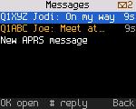
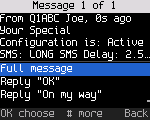
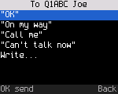

Questa pagina non è ancora tradotta; è mostrata in inglese.
Messages, Call Alert and Radio Check
DMR text messages, call alert and radio check work on DMR channels. APRS text messages can also be sent over FM on builds with an AFSK transmit path. The Radio reference says which radios have each path verified. None of them needs the codec. DMR sending needs a DMR channel you may transmit on and your DMR ID; APRS sending needs a valid callsign in Settings > My radio, an amateur APRS frequency and a board with AFSK transmit.
Receiving a message
When a message arrives, the radio shows a banner with the sender and the first words for 8 s. Press # while the banner is up to open the message. The radio plays a short three-note tone with the banner unless Settings > Sound > Message tone is off. On a radio with a vibration motor it also vibrates twice, unless Settings > Sound > Vibrate is off. A call alert or a private call to you gives one long vibration, an emergency four.

After the banner, the status line shows "M" and the number of unread messages, and the hub shows "1 new" next to Messages.
Reading messages
-
Press OK, 2 (Messages). The newest message is first. Unread messages are highlighted.
-
Focus a message and press OK. The radio shows the sender, how long ago it arrived and the text. It marks the message read.
-
Below the text:
Row Does Full message Shows the whole text on its own page. Up and Down scroll it, Back returns. Only when the text is too long for the screen, which ends it with "…" Reply "OK" Sends "OK" to the sender Reply "On my way" Sends "On my way" to the sender Call Makes the sender the talk target for now Delete Deletes the message. There is no undo
# on a DMR message opens the actions for its sender. PTT in an open DMR message calls the sender. The Call action is unavailable for APRS messages, whose sender is a callsign. # on an APRS message opens a composer addressed to that callsign.




The radio keeps DMR and APRS messages in memory. They are lost when the radio turns off.
Sending a message
- Open the actions for the person or talkgroup. Press # on Home for the last caller, or # on a contact.
- Press 3 (Message).
- Pick a preset ("OK", "On my way", "Call me" or "Can't talk now"), or choose Write... to type your own text. Press OK to send. Presets are sent in the radio's language (Settings > Display > Language).

The radio shows "Sending to ..." and returns to Home. A message to a person asks for a confirmation. When none comes, the radio tries again, in every format. The result comes as a banner:
| Banner | Meaning |
|---|---|
| "Delivered to ..." | The person's radio confirmed the message |
| "No answer from ...", with "Not delivered: send it again" | No confirmation came. The message isn't kept for a retry. Send it again from the actions |
| "Sent to ..." | A message to a talkgroup has gone out. Talkgroup messages have no confirmation |
With confirmed IP data turned off (tools/rfoundry_debug.py data ip-settings auto off), ETSI messages to a person also go
once, with "Sent to".
In Write..., use the number keys to enter letters, # to switch between ABC, 123 and abc, and Back to delete. A DMR message can hold up to 143 characters. Messages you send aren't stored in the radio.
Sending over APRS
- Open Messages > New APRS message when APRS is built and your callsign is set. You can also open Stations heard, select a station and choose Message to fill its callsign.
- Select To callsign and enter the recipient's callsign, with an optional
SSID (for example,
K1ABC-9). Press OK to keep it. - Choose Request acknowledgment and Include position if needed, then pick a preset or Write... and press OK to send. Both choices apply only to this message. APRS messages hold up to 67 characters. Presets use the radio's language; accented letters are sent without accents to keep the AX.25 text printable. The radio queues the APRS message on the configured FM frequency. "Sending to ..." means queued, not delivered.
Request acknowledgment starts on. The radio retries while waiting for a reply. Turn it off for a one-shot message that needs no delivery confirmation. Include position starts off. When on, the radio adds the current GPS, computer or fixed position as decimal coordinates to the message text. It refuses to send if no position is available or the text plus coordinates exceeds 67 characters. The position is part of the message body, not a separate position beacon.
The APRS destination is a callsign, not a DMR ID. A new outgoing message replaces one still awaiting an acknowledgment. Sending is refused if the callsign or text is invalid or the APRS RF path is unavailable. Tools > APRS shows the configured frequency and any blocking reason. Received APRS messages appear in Messages; replies go over APRS.
Message formats
Settings > Connections > Message format picks the encoding of new DMR messages. The radio reads all three DMR formats, whatever the setting. A reply to a DMR inbox message uses DMR.
| Format | Use it for |
|---|---|
| ETSI (default) | The standard DMR text message (ETSI IP text). Radios and dispatch software set to "DMR standard" text read it. Delivery to a person is confirmed |
| ETSI short | Radios that only show ETSI short data messages. Delivery is confirmed |
| Motorola | MOTOTRBO radios and dispatch software set to Motorola text messages (TMS). Delivery is confirmed. Not in builds made without Motorola TMS support |
If your radio was set up before ETSI became the default and its data settings were saved, it keeps sending Motorola messages until you change the setting.
Call alert
A call alert pages another radio. It rings there, even when that radio's user isn't listening to your talkgroup.
- Open the actions for the person (# on Home, or # on a contact).
- Press 5 (Call alert). The radio shows "Call alert to ..." and returns to Home.
- The radio tries up to 3 times. The result is a banner: "... answered the alert" or "No answer from ...".
When someone sends you a call alert, the radio shows "Call alert from ..." with "PTT replies". Press # while the banner is up for the caller's actions. Your radio acknowledges the alert unless Settings > Connections > Answer call alerts is off.

Radio check
A radio check asks another radio to answer, without its user doing anything. It shows whether that radio is on and in range.
- Open the actions for the person.
- Press 4 (Radio check). The radio shows "Checking ...".
- The radio tries up to 3 times. The result is a banner. "... answered (0.8 s)" gives the round-trip time. "...: no answer" comes with "Off, out of range or elsewhere".

Your radio answers radio checks from others while Settings > Connections > Answer radio checks is on, the default. An answer is a short transmission the radio makes without you pressing PTT; turn the setting off if you don't want that.
Registration (ARS) and location (LRRP)
ARS registers the radio with a presence server at power-up and after a channel change. It is off until a server ID is set: Settings > Connections > Data services > ARS server. Type the server's DMR ID and press OK; 0 turns ARS off. The screen shows the registration: Registering, Registered, Refused or No answer. The ID is saved in the codeplug, so the Codeplug Editor can set it too.
LRRP answers location requests from a dispatcher. A radio without GPS (Radio reference) answers "no fix". Settings > Location > Answer GPS requests turns the answers off.